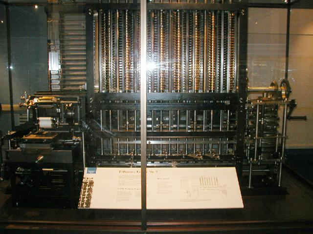
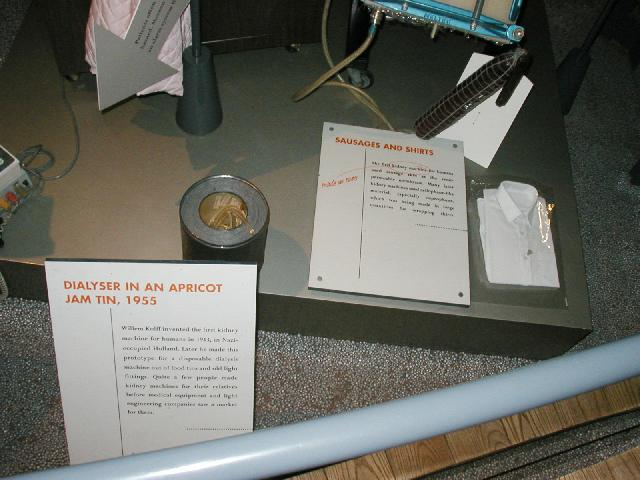
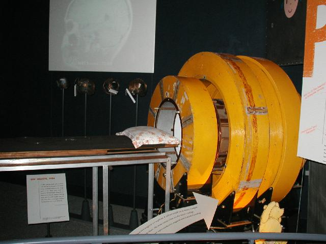
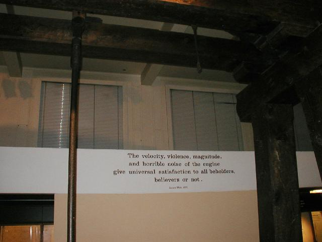
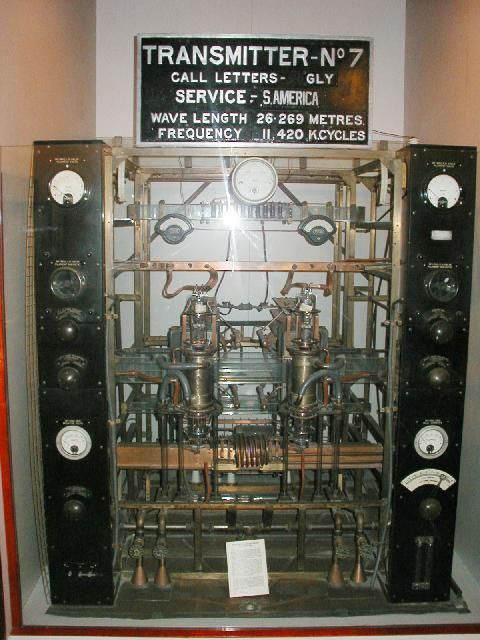
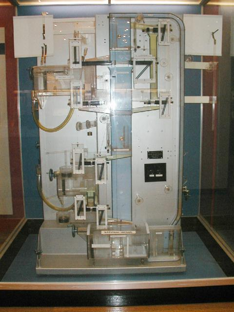
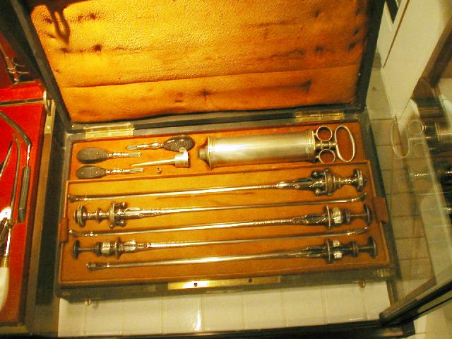

The Science Museum

A real Babbage engine recently built to prove that the
machine could have been manufactured in Babbage's time. A number of
errors in the blueprints were detected and corrected that would have
caused the gears to sieze by acting against each other. Babbage's
motive was to correct lethal errors in the logarithmic tables used for
navigation. This machine can compute 7th order polynomials to 30 digits
of precision.

The first dialysis machine. Later models used
plastic shirt wrappers as filters.

Original MRI prototype, 1971

The biker's credo as rendered by James Watt.

Early radio transmitter

An early analog computer, or if you view it properly, qualitative
reasoning engine. The black rods are valves that can be set to
give values for economic independent variables such as interest
rates. A red fluid flowed through the system. The quantity
of fluid in the reservoirs gives dependent variable values, such as
gross national product.The reservoirs did not contain guages, making
this a physically realized qualitative reasoning engine.

19th century lithotripsy kit for crushing and extracting bladder stones
without making an incision.